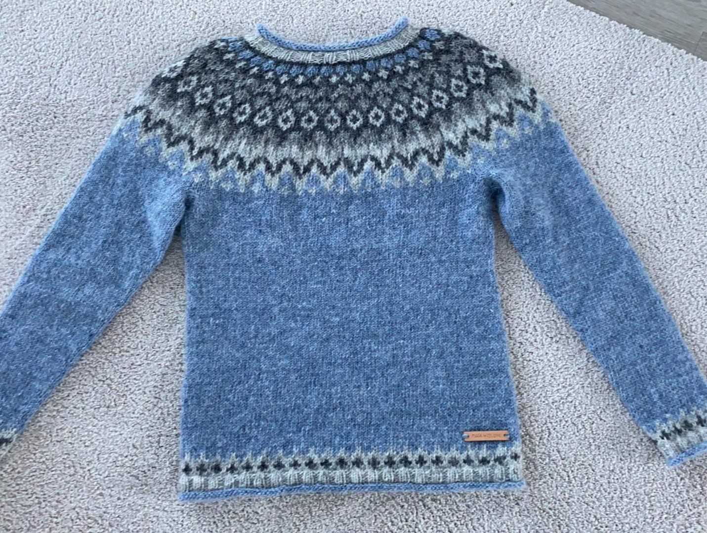
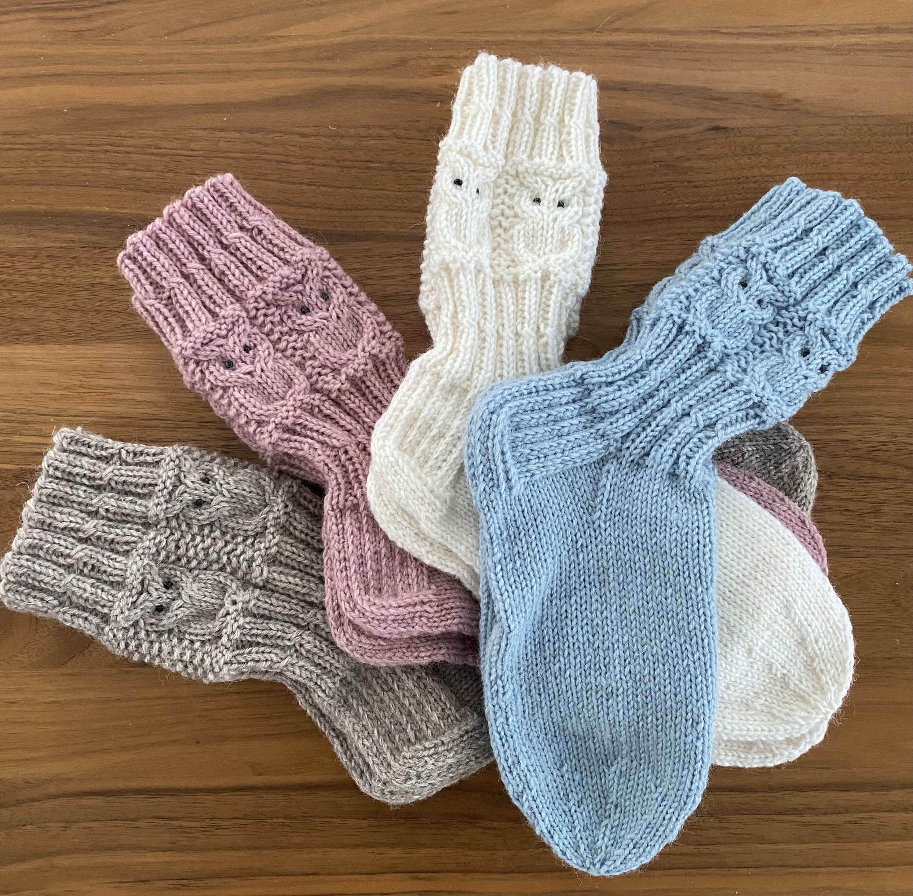
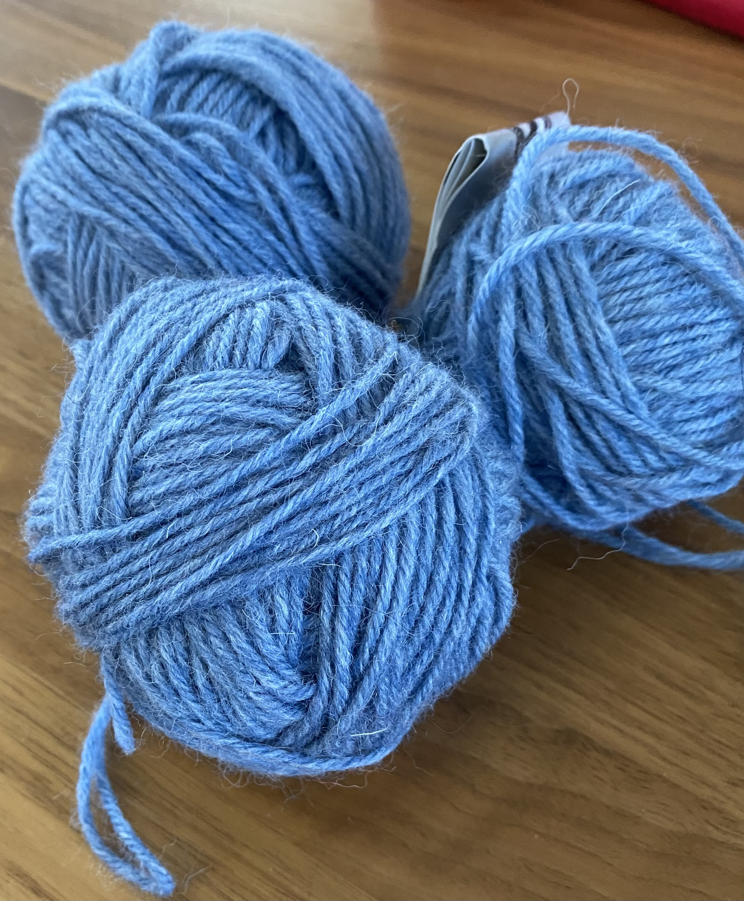

Villapaidat
Tässä on islantilaisesta langasta kutomani villapaita hyvälle ystävälleni. Nämä ovat minusta helppoja ja yksinkertaisia tehdä.
Islantilaisvillapaitakirjassa olevat ohjeet ovat helppoja. Täytyy muistaa tehdä hyvä viimeistely villapaidoille upottamalla ne etikkaveteen. Osaan myös opettaa näiden villapaitojen tekemistä!
Villasukat
Tykkään myös kutoa erilaisia villasukkia.Teen kaikennäköisiä villasukkia. Sukkien teko rentouttaa ja on mukavaa ajankulua.
Sukkakoko-taulukkoa käytän hyväkseni sukkia suunnitellessa. Kudon yleensä telkkaria katsoessa. Olen kutonut paljon sukkia perheelleni sekä ystävilleni.
Langat
Tykkään kutoa erityisesti sukkia Novitan 7-veljestä langasta. Islantilaisia villapaitoja kudon islantilaisesta letlopi-merkkisestä langasta.
Täältä ostan islantilaisia lankoja.
Islantilaislankojen eri värejä
- tuhkanharmaa 0056
- vaalea sinivihreä 1404
- keväänvihreä 1406
- harmaansininen 1700
- seitsemän veljestä
- letlopi
- nalle